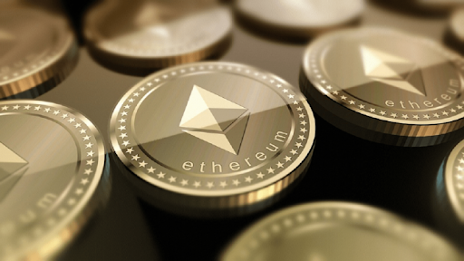
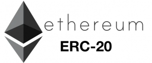

Why People Create Ethereum Token for Fundraising

What is Ethereum?
Ethereum is a blockchain-based platform.Ethereum was founded in the year 2015.Ether is a digital currency and derived from the ethereum platform.Ether is a peer to peer software platform used in the ethereum platform.We can avoid the fraud, control, and interference of third parties by using these smart contracts and decentralized applications.
Ether is shortened as ETH in the crypto market.The value of 1 ethereum equals to $132 in the coin market.Many traders started to trade the ethereum in the trading market and gained their profits.Bitcoin is the first cryptocurrency launched across the globe.The real fact is Ethereum derived from the bitcoin.But bitcoin has a lower supply and has more liquidity.
Currently, ETH is a top 3 cryptocurrency used for payments and exchange.So in the future, it may become the first position in transacting and trading in the crypto industry.
By using ethereum you can raise the funds.In this blog, I have clearly explained how the ethereum token is used for fundraising.
What is Ethereum token(ERC20)?
Ethereum token is a kind of digital asset acquired from the ethereum blockchain.Ethereum token used for buying, selling and trading.You can buy the ethereum token by any cryptocurrency in the exchange platform.These tokens are derived from the existing ethereum blockchain.So there is no need for developing the new blockchain.
The prominent ethereum token in the ethereum blockchain is ERC20.For now, the ethereum smart contract is ERC20.For developing an ERC20 token there is a set of rules for developers.Only after satisfying the rules the developers can create your own ethereum token ERC20.
Why people create Ethereum token(ERC20) for Fundraising?
ERC20 is the most popular token which is derived from the ethereum blockchain.These tokens are widely used all over the globe.Each ethereum token is unique but the value is the same.Its a secured and useful token for a startup and entrepreneur.So people around the world have an interest in buying the ethereum token for their fundraising.
Ethereum tokens are the specific type of smart contract that lives in the ethereum blockchain.ERC20 tokens are simple and hassle-free for deployment.There are some strategies for fundraising using the ERC20 tokens they are Initial CoIn offering(ICO), Initial Exchange Offering(IEO) and Security Token Offering(STO).
ICO is the website where token sales will take place.For participating in ICO, people should buy an ethereum token or they should create their own token.After creating or buying a token you should send the token to the investor’s wallet address.So for transferring the tokens, you should have a crypto wallet.
You should have white paper for your project which should be unique and innovative.So that investors can provide you funds.After these processes are done, your token sales will begin on the ICO website.You can set your price for your token and buyers will start to buy your token.
Here the investors will not market your ICO website and you should take care of marketing your tokens.If the marketing and token sales go well then it gives you a huge amount of profits and also for the investors.So by using ethereum token, you can raise your funds.
Another method of fundraising is the Initial exchange offering.It is a feature-packed module integrated into the cryptocurrency exchange platform.Many people said IEO is the evolution of ICO.it is a crowdfunding process.So when you use the ethereum token in the IEO module.You can raise your funds hassle-free.
How to Launch an Ethereum(ERC20) token:
For creating a single ethereum token, there is a set of rules to follow.So that they can be traded, exchanged, sold and transferred to other’s wallet addresses.Only the ethereum token development service provider can create an ERC20 token.It contains six mandatory rules and three optional rules.
Mandatory rules to launch an ERC20 token:
Optional rules are:
In every ethereum token development service, There are some steps to launch an Ethereum token they are
1.Decide how the token should be
The first step is to decide how your ethereum token should be.Also, know how this ethereum based token is helpful for your project.List the features and make a plan.
2.Write a smart contract with ERC20 standard:
Writing a smart contract is an essential part of the blockchain technology, there are some functions in ERC20 standard they are
3.Test contract code:
After writing the smart contract code, run and check the functionalities of code whether it works and completely okay.
4.Validate the tokens:
After checking the functionalities of code, start to validate the tokens.By transferring the tokens to other address you can validate the ERC20 tokens.Check the performance of the token.If there is any problem with these validations, then make the corrections.
Then finally deploy these steps in the ethereum blockchain.So that you can launch an ethereum token.
Types of Ethereum tokens:
There some types of ethereum tokens and each token differs from other tokens:
These ethereum tokens said to be ethereum standard and used in blockchain technology.
Some of the tokens which work with ERC20 standard they are:
Some of the wallets which supports ERC20 tokens, they are:
Benefits of using the Ethereum (ERC20) token:
Conclusion:
In the crypto industry, there are many other ethereum tokens are available in the market.Even though ERC20 token has some issues or bugs it will be overcome in upcoming days.Till now many big projects use ERC20 tokens for their best outcomes.so choose the top-grade ethereum token development service provider for the best outcomes in your business.
[bsa_pro_ad_space id=4]
Share on Facebook Tweet Follow us
Hadoop is an open source software framework utilized for storing data and running applications in a group of commodity hardware.This software provides a massive storage for all kind of data, with enormous processing power and also have an ability to handle limitless concurrent tasks virtually.
Hadoop also refers to a distributed processing technology widely being used for Big Data Analytics.The market of Hadoop is growing rapidly as a Hadoop technology and also provides the cost effective and quick solutions as compared to the traditional tools used for data analysis that includes relational database management system (RDMS).
The study shows that Hadoop Big Data is widely being accepted by numerous sectors that include BFSI, automotive, IT/ITES, Telecommunication and among others.BFSI sectors is expected to exhibits the largest market share, followed by the telecommunication, IT/ ITES and among others.The growing volume of structured and unstructured data and increasing demand of Big Data analytics are some of the major factors for the growth of the Global Hadoop Big Data Analytics Market.The advancement in technology has led the requirement storage capacity and has resulted into the growth of the Hadoop Big Data market.
Based on the vertical segment, the logistics and transportation are expected to grow with the highest CAGR during the end of the forecast period.This growth is due to the implementation of intelligent transportation systems and raising demand of integrated supply chain management systems.Global Hadoop Big Data Analytics is expected to grow from $7.3 Billion in 2018 to $52 Billion by 2023, at a CAGR of 36.37% by the end of the forecast period.
Key Players
The prominent players in the Global Global Hadoop Big Data Analytics Market are – Teradata Corporation (U.S.), Cloudera, Inc.(U.S.), IBM Corporation (U.S.), Microsoft Corporation (U.S.), Tableau Software, Inc.(U.S.), Pentaho Corporation (U.S.), Amazon Web Services (U.S.), Datameer, Inc.(U.S.), Karmasphere, Inc.(U.S.), MapR Technologies (U.S.) and among others.
Market Segments
Global Global Hadoop Big Data Analytics Market is segmented on the basis of solution, services, application, and vertical.Global Global Hadoop Big Data Analytics Market by Solution: Managed Software, Application Software, Performance Management Software and Others.
Global Global Hadoop Big Data Analytics Market by Service: Consulting and Development Service, Managed Services, Others.Global Global Hadoop Big Data Analytics Market by Application: Customer Analytics, Risk Fraud Analytics, Security Intelligence, Operational Intelligence and Others.
Global Global Hadoop Big Data Analytics Market by Vertical: BFSI, Government Defense, IT Telecommunication, Manufacturing, Transportation SCM, and Others.
Regional Analysis:
The regional analysis of Global Global Hadoop Big Data Analytics Market is being studied for regions such as Asia pacific, North America, Europe and Rest of the World.The study indicates the North American region is dominating the Global Hadoop Big Data Analytics Market due to factors such as increased internet penetration and technological advancements.The study also indicates that cloud deployment and raising demand of real time data is a driving factor for Asia-Pacific region to grow significantly in the Global Hadoop Big Data Analytics Market by the forecast period.Apart from it the rising adoption of IT services and Big Data analysis is also driving the smart thermostat market.
[bsa_pro_ad_space ID = 4]
Posted On: 2020-03-18T00:00:00
Posted By: Ronon Margo



Content Date: 2020-03-18
Download Date: 2021-07-08
Document ID: L0C04DJJY